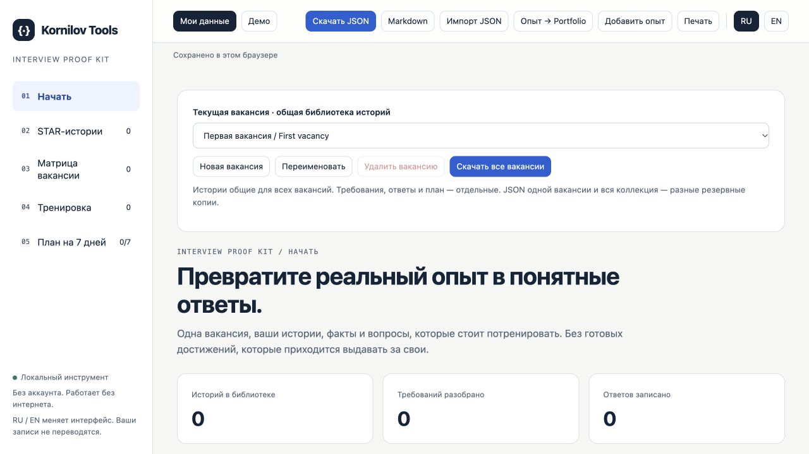

Interview Proof Kit
Explain what you actually contributed.
Build real project stories, map your experience to a vacancy and practise your answers.
A form that keeps input after an error
- Problem
- An error cleared the entered values.
- My contribution
- Separated input, pending and error states.
- Evidence
- A retry check. Fictional example only.
Demonstration only. Projects, people and numbers are fictional.
Who it is for
For developers who want their own decisions and contributions to be visible beyond a list of technologies.
What you get
- STAR story and evidence library
- Vacancy requirements mapped to your examples
- 12 timed practice cards
- Up to 20 vacancies with individual requirements and plans
- Collection JSON backup, Markdown and experience exchange with Portfolio Case Kit

How it works
Paid tools come in a ZIP: extract the folder and open index.html in a desktop browser. There are no dependencies to install and no separate in-tool account. Keep JSON backups of your workspace; the mobile site is primarily for exploring the product.
How you can use it
For your own interview preparation. Share exports of your answers with interviewers or mentors. Redistributing the original package is not permitted.
Full licenseOne-time purchase and subscriptions
The purchase button opens the specific Boosty post. You can buy this product once. If you already have a qualifying subscription, check access in your account first. Boosty subscriptions are billed separately and may renew; review the selected option before payment.
Support and updates
Need help with the files or the tool? Message the creator on Boosty. Include the product, version and browser. A changelog is included in the ZIP. Future updates and new products are not promised as part of a one-time purchase.